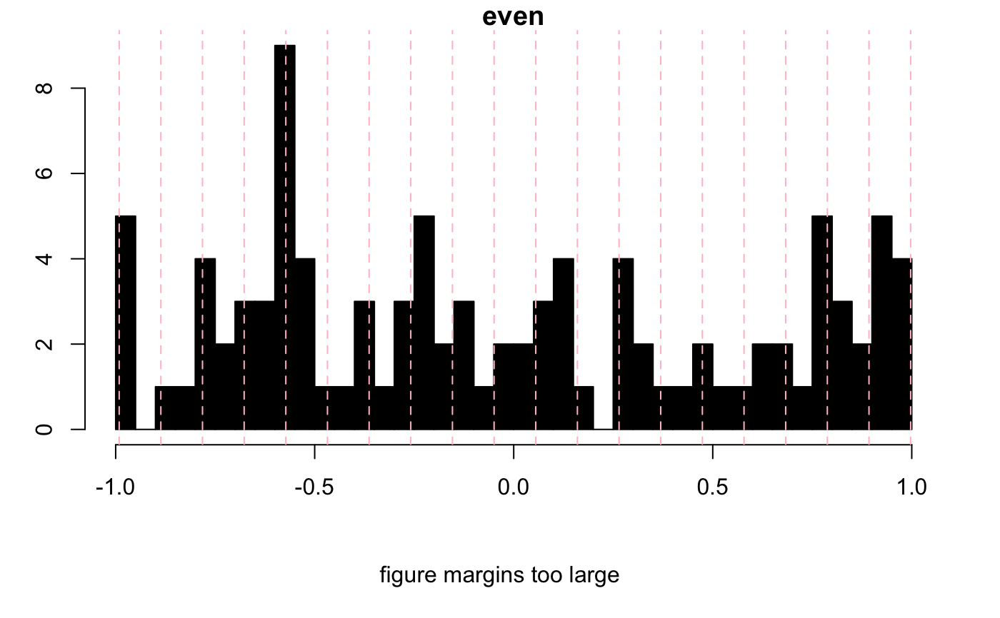
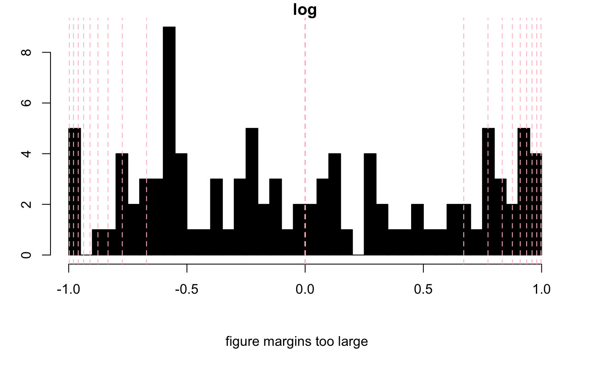
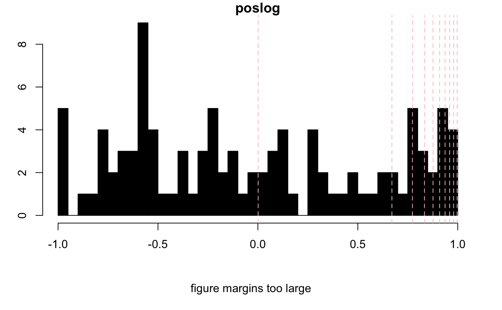
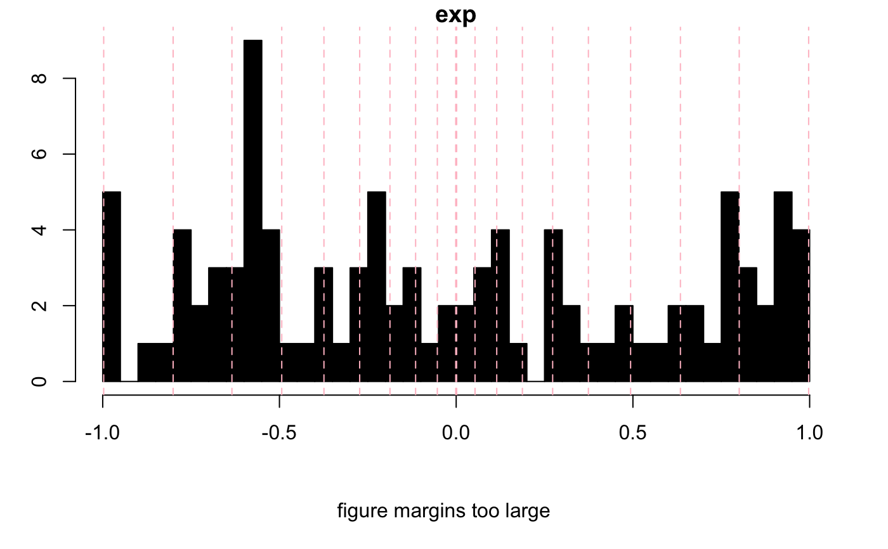
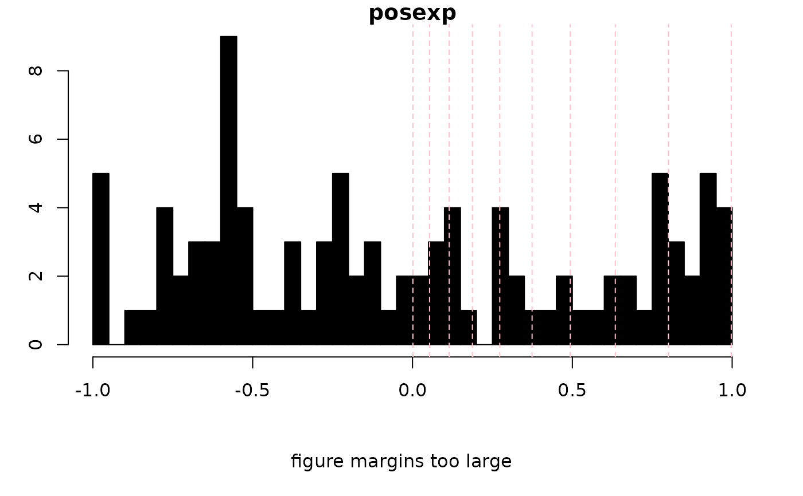
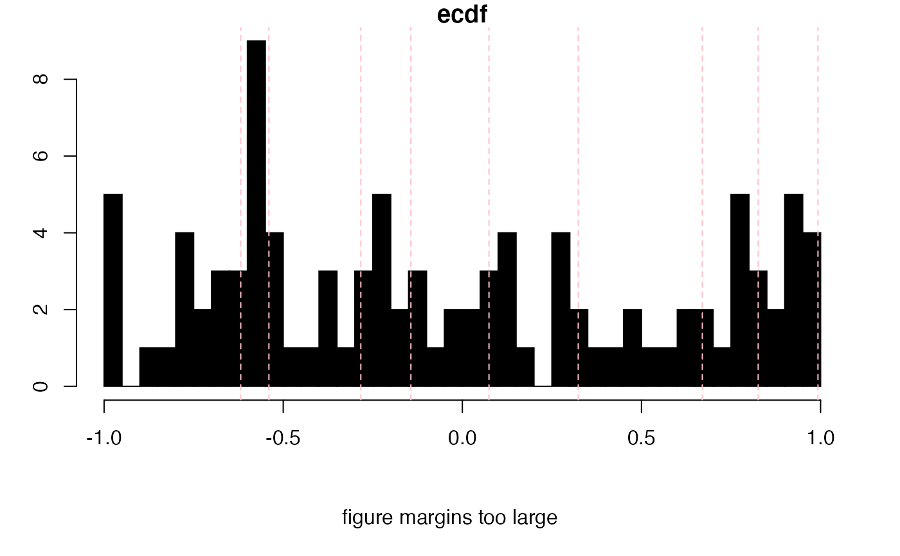
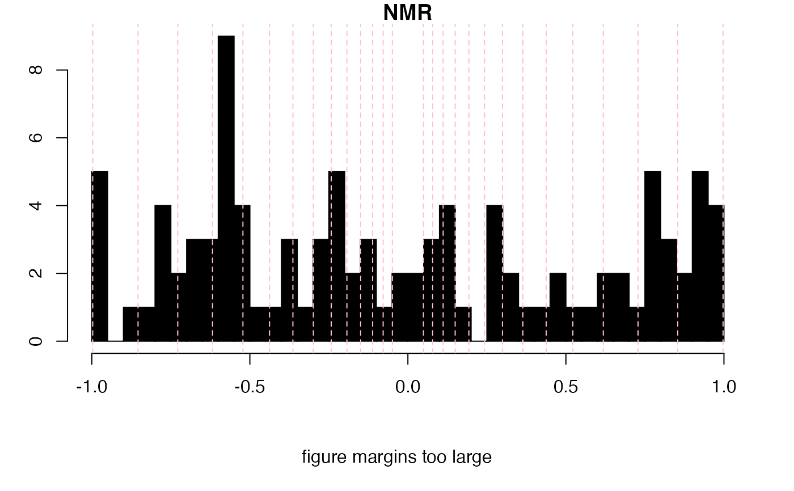

Given a matrix or vector input, this function will assist in selecting levels for preparing
contour and image type plots. For instance, levels can be spaced evenly,
logrithmically, exponentially or using a cumulative distribution function.
NA values are ignored.
calcLvls(
M,
n = 10,
mode = "even",
lambda = 1.5,
base = 2,
showHist = FALSE,
...
)A numeric matrix or vector.
An integer giving the number of levels desired:
For mode = "even" n evenly spaced levels are returned.
For mode = "ecdf", n should be one or more values in the interval [0...1].
For instance, a value of 0.6 corresponds to a single level in which 60 percent
of the matrix values are below, and 40 percent above.
For all other values of mode, n is used internally as floor(n/2)
and the result eventually doubled in order to give a symmetric set of levels. In addition,
only the positive or negative levels may be selected, leaving you with
floor(n/2)/2 levels.
Character. One of "even", "log", "exp",
"ecdf", "posexp", "negexp", "poslog", "neglog"
or NMR. "even" will create evenly
spaced levels. "log" will create levels which are more closely
spaced at the high values, while "exp" does the opposite. The pos- or
neg- versions select just the positive or negative values. "ecdf"
computes levels at the requested quantiles of the matrix. NMR uses
exp, lambda = 2.0 and n = 32. It also removes the four
values closest to zero, where the data may be primarily noise.
Numeric. A non-zero exponent used with method = "exp"
and relatives. Higher values push the levels toward zero.
Integer. The base used with method = "log" and
relatives.
Logical. Shall a histogram be drawn showing the location of the chosen levels?
Arguments to be passed downstream.
A numeric vector giving the levels.
set.seed(9)
MM <- matrix(runif(100, -1, 1), nrow = 10) # test data
tsts <- c("even", "log", "poslog", "exp", "posexp", "ecdf", "NMR")
for (i in 1:length(tsts)) {
nl <- 20
if (tsts[i] == "ecdf") nl <- seq(0.1, 0.9, 0.1)
levels <- calcLvls(
M = MM, n = nl, mode = tsts[i],
showHist = TRUE, main = tsts[i]
)
}






